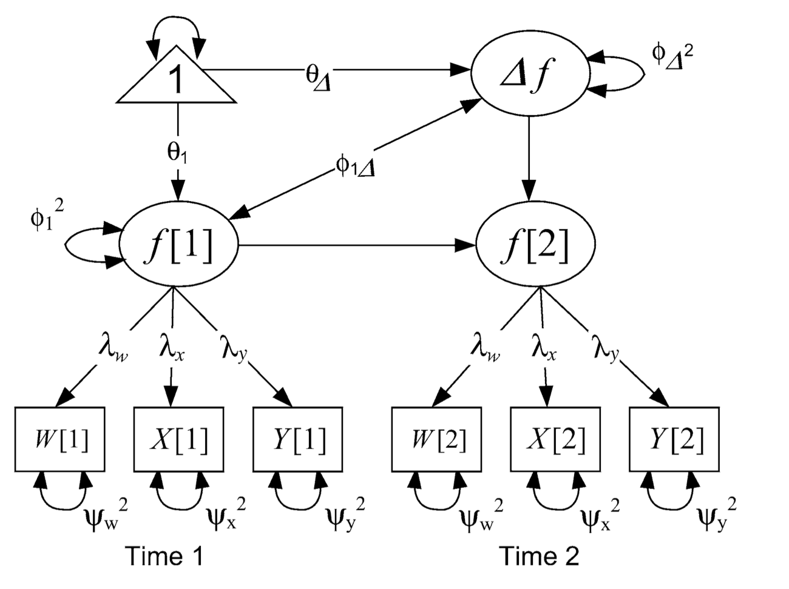

Normally we are only interested in 1 DV at a time. However, many theories incorprate multiple DVs. With longitudinal models it is easy to incorporate multivariate questions.
SEM is well suited for multiple DVs as there is less of an emphasis on a single traidtional equation. “If you can draw it you can model it”
Some ~basic multivariate models can be run with MLM
Growth models x2
What does a multivariate growth model look like?
Code
affect <-read.csv("https://raw.githubusercontent.com/josh-jackson/longitudinal-2022/main/longitudinal.csv")library(lavaan)library(tidyverse)model.1<-' i =~ 1*PosAFF11 + 1*PosAFF12 + 1*PosAFF13 s =~ 0*PosAFF11 + 1*PosAFF12 + 2*PosAFF13'fit.1<-growth(model.1, data=affect)summary(fit.1)
lavaan 0.6-11 ended normally after 31 iterations
Estimator ML
Optimization method NLMINB
Number of model parameters 8
Number of observations 368
Model Test User Model:
Test statistic 0.016
Degrees of freedom 1
P-value (Chi-square) 0.898
Parameter Estimates:
Standard errors Standard
Information Expected
Information saturated (h1) model Structured
Latent Variables:
Estimate Std.Err z-value P(>|z|)
i =~
PosAFF11 1.000
PosAFF12 1.000
PosAFF13 1.000
s =~
PosAFF11 0.000
PosAFF12 1.000
PosAFF13 2.000
Covariances:
Estimate Std.Err z-value P(>|z|)
i ~~
s -0.041 0.026 -1.609 0.108
Intercepts:
Estimate Std.Err z-value P(>|z|)
.PosAFF11 0.000
.PosAFF12 0.000
.PosAFF13 0.000
i 3.210 0.035 91.085 0.000
s 0.045 0.020 2.268 0.023
Variances:
Estimate Std.Err z-value P(>|z|)
.PosAFF11 0.314 0.049 6.456 0.000
.PosAFF12 0.244 0.024 10.322 0.000
.PosAFF13 0.185 0.038 4.930 0.000
i 0.210 0.046 4.608 0.000
s 0.024 0.021 1.187 0.235
library(brms)mlm.4<-brm(family = gaussian, CON ~1+ time + (1+ time | ID),prior =c(prior(normal(0, 1.5), class = Intercept),prior(normal(0, 1.5), class = b),prior(normal(0, 1.5), class = sd, coef = Intercept, group = ID), prior(normal(0, 1.5), class = sd, coef = time, group = ID), prior(exponential(1), class = sigma),prior(lkj(2), class = cor)),iter =4000, warmup =1000, chains =4, cores =4,file ="mlm.4",data = mlm)summary(mlm.4)
Family: gaussian
Links: mu = identity; sigma = identity
Formula: CON ~ 1 + time + (1 + time | ID)
Data: mlm (Number of observations: 225)
Draws: 4 chains, each with iter = 4000; warmup = 1000; thin = 1;
total post-warmup draws = 12000
Group-Level Effects:
~ID (Number of levels: 91)
Estimate Est.Error l-95% CI u-95% CI Rhat Bulk_ESS Tail_ESS
sd(Intercept) 0.06 0.01 0.05 0.07 1.00 3080 3528
sd(time) 0.00 0.00 0.00 0.01 1.00 1501 1367
cor(Intercept,time) -0.08 0.39 -0.75 0.72 1.00 8963 7456
Population-Level Effects:
Estimate Est.Error l-95% CI u-95% CI Rhat Bulk_ESS Tail_ESS
Intercept 0.19 0.01 0.18 0.21 1.00 5084 6825
time -0.00 0.00 -0.01 0.00 1.00 10026 7880
Family Specific Parameters:
Estimate Est.Error l-95% CI u-95% CI Rhat Bulk_ESS Tail_ESS
sigma 0.05 0.00 0.04 0.05 1.00 4129 5352
Draws were sampled using sampling(NUTS). For each parameter, Bulk_ESS
and Tail_ESS are effective sample size measures, and Rhat is the potential
scale reduction factor on split chains (at convergence, Rhat = 1).
Code
mv.1<-brm(family = gaussian,mvbind(CON, DAN) ~1+ time + (1+ time | ID),prior =c(prior(normal(0, 1.5), class = Intercept),prior(normal(0, 1.5), class = b),prior(lkj(2), class = cor),prior(lkj(2), class = rescor)),iter =4000, warmup =1000, chains =4, cores =4,file ="mv.1",data = mlm)summary(mv.1)
Family: MV(gaussian, gaussian)
Links: mu = identity; sigma = identity
mu = identity; sigma = identity
Formula: CON ~ 1 + time + (1 + time | ID)
DAN ~ 1 + time + (1 + time | ID)
Data: mlm (Number of observations: 225)
Draws: 4 chains, each with iter = 4000; warmup = 1000; thin = 1;
total post-warmup draws = 12000
Group-Level Effects:
~ID (Number of levels: 91)
Estimate Est.Error l-95% CI u-95% CI Rhat Bulk_ESS
sd(CON_Intercept) 0.06 0.01 0.05 0.07 1.00 3184
sd(CON_time) 0.00 0.00 0.00 0.01 1.02 309
sd(DAN_Intercept) 0.04 0.01 0.03 0.05 1.00 2250
sd(DAN_time) 0.00 0.00 0.00 0.01 1.00 806
cor(CON_Intercept,CON_time) -0.14 0.39 -0.77 0.70 1.00 2604
cor(DAN_Intercept,DAN_time) -0.04 0.40 -0.75 0.76 1.00 4314
Tail_ESS
sd(CON_Intercept) 6838
sd(CON_time) 54
sd(DAN_Intercept) 2293
sd(DAN_time) 953
cor(CON_Intercept,CON_time) 4370
cor(DAN_Intercept,DAN_time) 7145
Population-Level Effects:
Estimate Est.Error l-95% CI u-95% CI Rhat Bulk_ESS Tail_ESS
CON_Intercept 0.19 0.01 0.18 0.21 1.00 2974 3996
DAN_Intercept 0.20 0.01 0.19 0.22 1.00 3085 6662
CON_time -0.00 0.00 -0.01 0.00 1.00 8481 9014
DAN_time -0.01 0.00 -0.01 -0.00 1.00 1963 2066
Family Specific Parameters:
Estimate Est.Error l-95% CI u-95% CI Rhat Bulk_ESS Tail_ESS
sigma_CON 0.05 0.00 0.04 0.05 1.01 359 82
sigma_DAN 0.05 0.00 0.04 0.06 1.00 1279 1194
Residual Correlations:
Estimate Est.Error l-95% CI u-95% CI Rhat Bulk_ESS Tail_ESS
rescor(CON,DAN) 0.13 0.09 -0.05 0.32 1.01 418 160
Draws were sampled using sampling(NUTS). For each parameter, Bulk_ESS
and Tail_ESS are effective sample size measures, and Rhat is the potential
scale reduction factor on split chains (at convergence, Rhat = 1).
# A tibble: 6 × 9
ID DAN_1 CON_1 DAN_2 CON_2 DAN_3 CON_3 DAN_4 CON_4
<int> <dbl> <dbl> <dbl> <dbl> <dbl> <dbl> <dbl> <dbl>
1 6 0.162 0.193 0.168 0.195 0.215 0.181 NA NA
2 29 0.175 0.159 0.136 0.0881 NA NA NA NA
3 34 0.166 0.137 0.140 0.0746 NA NA NA NA
4 36 0.152 0.139 0.205 0.180 NA NA NA NA
5 37 0.219 0.226 0.158 0.178 0.259 0.152 NA NA
6 48 0.130 0.250 0.270 0.232 0.248 0.173 NA NA
How to measure change, or should we? https://www.gwern.net/docs/dnb/1970-cronbach.pdf This paper lays out some of the problems that occur with standard treatments of two wave assessments.
The most basic two wave form of change is a difference score. However, many have said these are problematic. The issues are: 1. hard to separate measurement error from true change
2. unreliable estimate of change
3. initial level (or last level) may be driving change. How to account for?
The alternative is a standard residual gain/change score where you regress time 2 onto time 1. This overcomes some of the issues raised about because we are being conservative about the error by “regressing to the mean” such that people with larger changes than average will have their change scores “shrunken” to the average, must like we do with MLMs.
This also helps with accounting for starting values that may be responsible for the changes, as this is literally controlling for the initial level.
The issues with residualized change models, however, are:
it isn’t true change, as you are implying people change similarly
it does not account for unreliability of change in a principled way
Lords Paradox
This has lead to what is known as Lord’s paradox. Take the two approaches above, simplified to:
Call:
lm(formula = diff ~ group, data = df)
Residuals:
Min 1Q Median 3Q Max
-0.5174 -0.1133 0.0208 0.1310 0.4612
Coefficients:
Estimate Std. Error t value Pr(>|t|)
(Intercept) 0.038975 0.017300 2.253 0.0254 *
groupControl 0.004028 0.024466 0.165 0.8694
---
Signif. codes: 0 '***' 0.001 '**' 0.01 '*' 0.05 '.' 0.1 ' ' 1
Residual standard error: 0.173 on 198 degrees of freedom
Multiple R-squared: 0.0001369, Adjusted R-squared: -0.004913
F-statistic: 0.02711 on 1 and 198 DF, p-value: 0.8694
residualized change score model
summary(lm(T2 ~ group + T1, df))
Call:
lm(formula = T2 ~ group + T1, data = df)
Residuals:
Min 1Q Median 3Q Max
-0.315819 -0.066341 0.005835 0.060977 0.268154
Coefficients:
Estimate Std. Error t value Pr(>|t|)
(Intercept) 0.01724 0.01008 1.71 0.0888 .
groupControl 0.44744 0.02648 16.90 <2e-16 ***
T1 0.44538 0.02797 15.92 <2e-16 ***
---
Signif. codes: 0 '***' 0.001 '**' 0.01 '*' 0.05 '.' 0.1 ' ' 1
Residual standard error: 0.1002 on 197 degrees of freedom
Multiple R-squared: 0.9463, Adjusted R-squared: 0.9457
F-statistic: 1734 on 2 and 197 DF, p-value: < 2.2e-16
What is going on? We are asking different questions by not accounting for T1 in the former model. The change score model is accounting for the total effect (in mediation language) whereas the residualized change score model is only interested in the direct effect.
Code
mod <-' T1 ~ a*group T2 ~ b*group + c*T1 # total effect TE := (a*-1) + (a*c*1) + (b*1) 'lord <-sem(mod, data=df)summary(lord)
lavaan 0.6-11 ended normally after 1 iterations
Estimator ML
Optimization method NLMINB
Number of model parameters 5
Number of observations 200
Model Test User Model:
Test statistic 0.000
Degrees of freedom 0
Parameter Estimates:
Standard errors Standard
Information Expected
Information saturated (h1) model Structured
Regressions:
Estimate Std.Err z-value P(>|z|)
T1 ~
group (a) 0.800 0.036 22.317 0.000
T2 ~
group (b) 0.447 0.026 17.028 0.000
T1 (c) 0.445 0.028 16.043 0.000
Variances:
Estimate Std.Err z-value P(>|z|)
.T1 0.064 0.006 10.000 0.000
.T2 0.010 0.001 10.000 0.000
Defined Parameters:
Estimate Std.Err z-value P(>|z|)
TE 0.004 0.024 0.165 0.869
What is not immediately obvious is that the change score can be conceptualized as a series of regressions. Starting with the residualized change score model
T2 = b*T1 + e
If we assume that the relationship (b) between T1 and T2 is 1. We can re-write as:
T2 = 1*T1 + e
Then we can subtract T1 fro each side of the model, leaving:
T2 - T1 = e
In other words, a change score is equivalent to assuming a perfect regression association (correlation) between timepoints.
Here, the residual will be equal to the average change and the variance of that will be the variance in the change. This can be thought of as akin to the mean and variance of our latent slope variable.
Lets visualize each of these models via path models
Residualized change model
Our latent residual can be conceptualized as what is left over from T2 after accounting for T1 (based on the average association between T1 and T2). We now have a measure of error/change that is not correlated to T1.
lavaan 0.6-11 ended normally after 1 iterations
Estimator ML
Optimization method NLMINB
Number of model parameters 2
Number of observations 200
Model Test User Model:
Test statistic 0.000
Degrees of freedom 0
Parameter Estimates:
Standard errors Standard
Information Expected
Information saturated (h1) model Structured
Regressions:
Estimate Std.Err z-value P(>|z|)
T2 ~
T1 0.845 0.023 36.317 0.000
Variances:
Estimate Std.Err z-value P(>|z|)
.T2 0.024 0.002 10.000 0.000
summary(lm(T2~T1, df))
Call:
lm(formula = T2 ~ T1, data = df)
Residuals:
Min 1Q Median 3Q Max
-0.46327 -0.10765 0.00553 0.11529 0.44807
Coefficients:
Estimate Std. Error t value Pr(>|t|)
(Intercept) 0.09699 0.01391 6.974 4.51e-11 ***
T1 0.84469 0.02338 36.135 < 2e-16 ***
---
Signif. codes: 0 '***' 0.001 '**' 0.01 '*' 0.05 '.' 0.1 ' ' 1
Residual standard error: 0.1565 on 198 degrees of freedom
Multiple R-squared: 0.8683, Adjusted R-squared: 0.8677
F-statistic: 1306 on 1 and 198 DF, p-value: < 2.2e-16
lavaan 0.6-11 ended normally after 27 iterations
Estimator ML
Optimization method NLMINB
Number of model parameters 3
Number of observations 200
Model Test User Model:
Test statistic 0.000
Degrees of freedom 0
Parameter Estimates:
Standard errors Standard
Information Expected
Information saturated (h1) model Structured
Regressions:
Estimate Std.Err z-value P(>|z|)
T2 ~
T1 0.845 0.023 36.317 0.000
Intercepts:
Estimate Std.Err z-value P(>|z|)
.T2 0.097 0.014 7.009 0.000
Variances:
Estimate Std.Err z-value P(>|z|)
.T2 0.024 0.002 10.000 0.000
residual sd from the regression
#standard error of the estimate from linear model0.1565^2
[1] 0.02449225
Is equal to the SEM t2 variance. SEM is just regression.
Note that this model isn’t telling us anything about the difference score or even the means of the numbers per se. .845 and .097 are any means or differences.
This is why I am not a fan of the residualzed change score. It doesn’t get at change the way we typically think of it. Previously our MLMs provide a way to think about what change means, and SEMs will do the same.
Latent change score
Using SEM we can have:
Examine absolute differences
Able to separate (account for) initial levels from change
Measuring change latently, and thus error free.
Number 2 is accomplished above in the residualized change models. However, what is not accomplished is getting terms similar to the slope component of a growth curve ie absolute change. Nor does it account for measurement error
library(lme4)mlm.1<-lmer(value ~ time + (1| id ), data = df.long)summary(mlm.1)
Linear mixed model fit by REML ['lmerMod']
Formula: value ~ time + (1 | id)
Data: df.long
REML criterion at convergence: 118.1
Scaled residuals:
Min 1Q Median 3Q Max
-1.99283 -0.47843 -0.02817 0.51432 2.38752
Random effects:
Groups Name Variance Std.Dev.
id (Intercept) 0.19014 0.436
Residual 0.01489 0.122
Number of obs: 400, groups: id, 200
Fixed effects:
Estimate Std. Error t value
(Intercept) 0.36056 0.03202 11.261
time 0.04099 0.01220 3.359
Correlation of Fixed Effects:
(Intr)
time -0.191
Time equals the absolute difference!! Intercept is the value at T1. I can recreate the mean values with this output. And I can see how people differ at T1.
However, this does not tell you differences in how people change. That is, everyone is assumed to change similarly ie fixed slope.
library(lme4)mlm.2<-lmer(value ~ time + (1+ time | id ), data = df.long)
output: Error: number of observations (=400) <= number of random effects (=400) for term (1 + time | id); the random-effects parameters and the residual variance (or scale parameter) are probably unidentifiable
We can either do two things: go with Bayes or go with SEM. SEM is actully more flexible here so lets explore this option.
Knowing what we know about recreating difference scores via constraints, we can also make a latent change score by modifying the same residual path model. This time assuming the association between t1 and t2 are the same.
Remember this is our residual change model
And remember that we can recreate a difference score if we set T2 = 1*T1 + e
T2 - T1 = e
Now we can interpret the residual as change, as it is explicitly what is left over from T2 after accoutering for T1. This is starting to look like what we for a growth model.
We have: 1. Mean and variance of the slope(change), akin to our random and fixed effects in MLM 2. Covariance between intercept and slope.
Code
latent.change <-' #define difference score T2 ~ 1*T1 # define the latent change variable change =~ 1*T2 #estimate means change ~ 1 T1 ~ 1 #Constrains mean of T2 to 0 T2 ~0*1 #estimate variance of change change ~~ change #estimate variance of T1 intercept T1 ~~ T1 #constrain variance of T2 to 0 T2 ~~ 0*T2 #intercept slope covariance change ~~ T1'latent.change <-sem(latent.change, data=df)summary(latent.change)
lavaan 0.6-11 ended normally after 18 iterations
Estimator ML
Optimization method NLMINB
Number of model parameters 5
Number of observations 200
Model Test User Model:
Test statistic 0.000
Degrees of freedom 0
Parameter Estimates:
Standard errors Standard
Information Expected
Information saturated (h1) model Structured
Latent Variables:
Estimate Std.Err z-value P(>|z|)
change =~
T2 1.000
Regressions:
Estimate Std.Err z-value P(>|z|)
T2 ~
T1 1.000
Covariances:
Estimate Std.Err z-value P(>|z|)
change ~~
T1 -0.035 0.006 -5.553 0.000
Intercepts:
Estimate Std.Err z-value P(>|z|)
change 0.041 0.012 3.367 0.001
T1 0.361 0.033 10.774 0.000
.T2 0.000
Variances:
Estimate Std.Err z-value P(>|z|)
change 0.030 0.003 10.000 0.000
T1 0.224 0.022 10.000 0.000
.T2 0.000
Change now has an intercept and a variance – just like in growth curves!
Residualized latent change score
Note that we haven’t yet removed the variance from the T1 (control for T1).
This may or may not be something you want to do. It is mostly helpful if change has occurred prior to T1 and you are looking at the impact of some variable on change. If you are doing an intervention that takes place after T1 then maybe stick to latent change model. If you are measuring a developmental process across time and want to make sure that initial levels aren’t influencing change then you may want to do this. If you are doing that but think that initial levels are related to the change process then maybe you would be over controlling, wiping away what may be important. ¯_(ツ)_/¯
Code
m.1<-' #define difference score T2 ~ 1*T1 # define the latent change variable change =~ 1*T2 #estimate means change ~ 1 T1 ~ 1 #Constrains mean of T2 to 0 T2 ~0*1 #estimate variance of change change ~~ change #estimate variance of T1 intercept T1 ~~ T1 #constrain variance of T2 to 0 T2 ~~ 0*T2 #intercept slope covariance change ~~ T1 ## use group as a predictor change ~ group'fit.1<-sem(m.1, data=df)summary(fit.1)
lavaan 0.6-11 ended normally after 28 iterations
Estimator ML
Optimization method NLMINB
Number of model parameters 6
Number of observations 200
Model Test User Model:
Test statistic 249.992
Degrees of freedom 1
P-value (Chi-square) 0.000
Parameter Estimates:
Standard errors Standard
Information Expected
Information saturated (h1) model Structured
Latent Variables:
Estimate Std.Err z-value P(>|z|)
change =~
T2 1.000
Regressions:
Estimate Std.Err z-value P(>|z|)
T2 ~
T1 1.000
change ~
group 0.447 0.014 31.812 0.000
Covariances:
Estimate Std.Err z-value P(>|z|)
.change ~~
T1 -0.124 0.013 -9.659 0.000
Intercepts:
Estimate Std.Err z-value P(>|z|)
.change -0.630 0.029 -21.755 0.000
T1 0.361 0.033 10.774 0.000
.T2 0.000
Variances:
Estimate Std.Err z-value P(>|z|)
.change 0.079 0.008 10.000 0.000
T1 0.224 0.022 10.000 0.000
.T2 0.000
expanding to more than 2 timepoints
Cross-lagged panel model
some cons: 1. Arbitrary starting point can change association 2. Time between lags can influence results because changes may not be aligned with assessment 3. Different constructs may change at different rates 4. Theoretically, the model suggest that one point in time influences change in some other construct. Why would Tuesday at 2 be so important, why not Thursday at 4? 5. does not seperate within and betwene person processes
RI-CLPM
Helps some of the cons, not all.
LGCM-SR
Helps with some of the cons of RI-CLPM, but not all
Latent change (difference) model
Takes our two wave change model and expands it

A unifying framework
All of these two wave and cross lagged models are monsters in a number of ways. 1. They are huge and complicated messes.2. They combine different aspects of other models. Much like Frakenstein, they are built by parts of other models.
Because they all can be built from one another the models can be thought of as subsets of one another. The differences are typically theoretical in nature. See this paper for an overview: